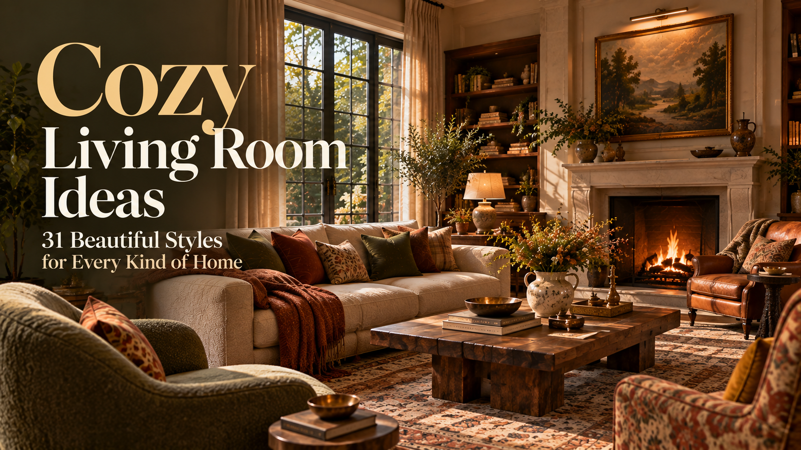
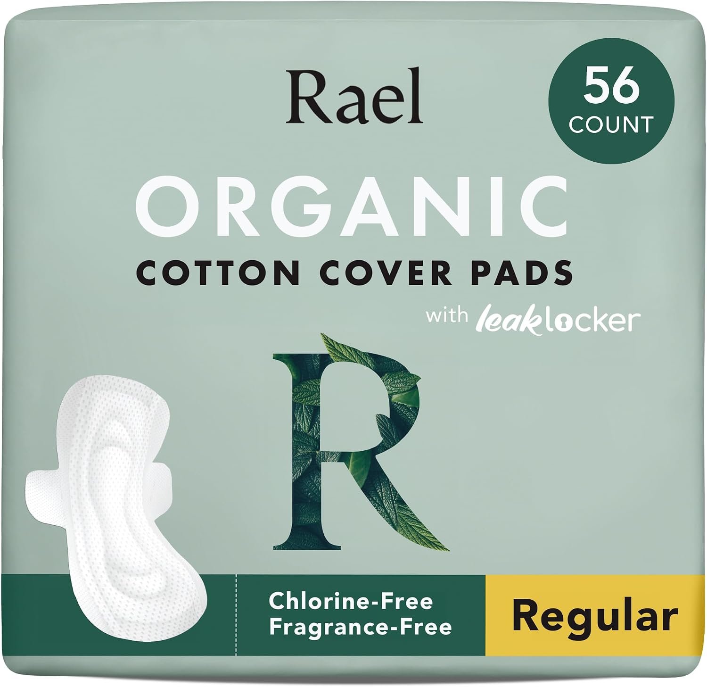

Cozy Living Room Ideas: 31 Beautiful Styles for Every Kind of Home
Discover cozy living room ideas, from modern arches and vintage interiors to
colorful boho spaces, luxurious rooms, small apartments, and grand traditional homes.
HOME DECOR
23 SEPTEMBER, 2026

Disclaimer: All products featured on OKAD are independently selected by our editors.
However, we may earn a small commission when you purchase products through links on
our site, at no additional cost to you.
A cozy living room does not have to follow one particular formula.
It can be spacious and architectural, colorful and artistic, elegant and traditional,
or surprisingly small and intimate. A room can feel cozy because of its furniture,
materials, lighting, proportions, colors, or simply the way everything works together.
The best living rooms usually begin with the room itself. Look at the windows,
ceiling height, flooring, walls, arches, doors, fireplace, natural light, and
available space before deciding on the style.
A spacious living room with large architectural arches can feel incredibly
inviting when the furniture stays soft and relaxed. Think curved sofas,
sculptural lounge chairs, a large textured rug, and a substantial coffee
table arranged around the room's strongest architectural feature.
Warm plaster walls, natural wood, stone, linen, and soft indirect lighting keep
the modern architecture from feeling cold. Instead of filling every surface with
decoration, let the arches, furniture silhouettes, and materials create the visual
interest.
The result is contemporary without feeling overly polished — a modern living room
that still feels like somewhere you would actually want to spend the evening.
Why it works: Strong architecture becomes the decoration while
soft furniture keeps the room comfortable.
This style brings together the nostalgic
character of an older home with the unmistakable shine of glossy oxide flooring.
Deep red-brown or terracotta-toned oxide floors create a rich foundation,
especially when paired with aged wooden furniture, cane details, vintage
cabinets, patterned textiles, and softly painted walls. The floor should
remain visible enough to become an important part of the room rather than
being covered completely by rugs.
Add a traditional wooden sofa set, a low vintage coffee table, brass or antique-metal
lighting, old framed artwork, and a few leafy plants. Keep the furniture slightly imperfect
and collected rather than making everything look newly purchased.
Warm daylight across the glossy floor gives the entire room a beautiful lived-in
quality.
Why it works: The reflective floor provides color,
character, and nostalgia while the furniture makes the room feel relaxed rather
than formal.
A spacious bohemian living room can be joyful without becoming chaotic.
Start with a large comfortable sofa and build the room around layers of color:
rust, mustard, dusty pink, olive, blue, terracotta, or deep green. Mix patterned
cushions, woven textiles, vintage rugs, wooden furniture, handmade-looking ceramics,
and large plants.
The furniture does not need to match perfectly. In fact, different silhouettes make
the room feel more collected and artistic.
A large artwork or colorful gallery wall can become the visual anchor while the rest
of the room remains comfortable and relaxed.
Why it works: Color, pattern, texture, and mismatched furniture create
personality without requiring a complicated layout.
For a sophisticated luxury living room, focus less on decoration and more on
proportion and materials.
A large sofa, sculptural armchairs, a substantial stone coffee table,
floor-to-ceiling curtains, and a carefully selected statement light can
make the room feel expensive without looking excessive.
Use combinations such as warm stone, walnut, brushed metal, textured upholstery,
and soft neutral walls. Keep accessories intentional rather than filling every table.
Large windows and generous spacing between furniture pieces help the room maintain
a calm, high-end feeling.
Why it works: Luxury comes from scale, materials, lighting, and
restraint rather than simply adding expensive-looking accessories.
A large traditional living room can feel impressive while still being deeply
comfortable.
Use a symmetrical furniture arrangement with two sofas or a sofa paired with
substantial armchairs. A fireplace, large artwork, built-in shelving, detailed
molding, or tall windows can establish the architectural character.
Layer in traditional wood furniture, patterned upholstery, classic lamps, books,
curtains, and a large rug. Keep the palette warm so the room feels welcoming rather
than overly formal.
This is the kind of living room that can work equally well for quiet evenings and
larger gatherings.
Why it works: Symmetry gives a large room structure while layered
materials prevent it from feeling empty.
For an artistic living room, let the room feel like a collection of things you
genuinely love.
Combine unusual chairs, expressive artwork, colorful rugs, sculptural lamps,
vintage furniture, books, ceramics, and unexpected color combinations. Instead
of choosing one perfectly coordinated palette, allow several shades to interact.
A large piece of artwork can become the starting point, with furniture and textiles
pulling smaller colors from it.
The key is to vary the visual weight. Not everything should compete for attention.
Why it works: The room feels creative and personal because the
objects tell a story rather than following a showroom formula.
A refined traditional room with tall windows, dark wood, ceiling details,
and classic furniture can feel remarkably cozy when the palette is softened.
Use warm timber, cream upholstery, muted greens, faded reds, aged brass,
woven textures, and traditional rugs. Large windows can be framed with full-length
curtains, while bookshelves or a substantial wooden cabinet can give the room
a sense of permanence.
Instead of making everything perfectly symmetrical, allow the room to feel
lived in with books, plants, artwork, and comfortable seating.
Why it works: Strong traditional architecture provides character
while softer textiles make the room approachable.
Clean furniture silhouettes and warm wood make this style easy to recognize
without making it feel dated.
Choose a low-profile sofa, tapered-leg chairs, a simple wooden coffee table,
and one or two distinctive vintage-inspired pieces. Add a patterned rug and
a few sculptural accessories.
Muted orange, olive, mustard, brown, cream, and warm blue work particularly
well with the wood tones.
Why it works: Simple furniture shapes create visual clarity
while warm materials keep the room inviting.
This room should feel collected over time rather than decorated in one afternoon.
Mix an old wooden cabinet with a contemporary sofa, vintage artwork with modern
lighting, patterned upholstery with simple linen curtains, and traditional furniture
with unexpected pieces.
Do not try to make every object belong to the same decade. The contrast is what
gives the room its personality.
Why it works: Different eras create a layered room that feels
personal and naturally lived in.
Create a warm, sophisticated room using carved wood, textured fabrics,
handcrafted-looking furniture, layered rugs, brass accents, and expressive artwork.
The room can remain contemporary while incorporating traditional shapes and
materials. A substantial wooden coffee table, comfortable neutral sofa, patterned
cushions, and statement lighting can establish the look without making it feel
themed.
Keep the architecture clean and let the materials provide the character.
Why it works: Traditional craftsmanship and contemporary proportions
create a room that feels both familiar and fresh.
A small living room can feel elegant when the furniture respects its proportions.
Choose a compact sofa, one beautiful accent chair, a narrow coffee table, and a
tall mirror or artwork to give the room vertical presence. Keep the floor visible
and avoid overcrowding the center.
Soft wall colors, vintage-style lighting, delicate molding, linen curtains,
and one or two antique-looking pieces create an effortlessly refined atmosphere.
Why it works: Smaller furniture and strong vertical details
make a compact room feel intentional rather than cramped.
This style combines contemporary architecture with natural materials.
Think plaster walls, curved furniture, pale oak, limestone, linen, wool,
woven textures, and sculptural ceramics. Keep the furniture low and comfortable,
with plenty of breathing room around each piece.
The color palette can remain quiet while variations in texture prevent the room from
becoming flat.
Why it works: Natural materials soften modern architecture and
create a calm atmosphere without excessive decoration.
Create a relaxed room around plaster walls, natural stone, warm wood, linen,
woven details, and soft earthy colors.
Arched doorways or windows can become major architectural features. A large
comfortable sofa, rustic coffee table, textured rug, and oversized ceramic pieces
can complete the room.
Use warm terracotta, sandy beige, muted green, faded blue, and natural wood
instead of relying entirely on white.
Why it works: Rough textures and earthy colors make the room
feel relaxed, sunny, and naturally welcoming.
A very large living room needs furniture with enough scale to make the space
feel intimate.
Use an oversized sofa arrangement, substantial armchairs, a large coffee table,
statement lighting, tall curtains, and a generous rug. If the ceiling is exceptionally
high, introduce vertical artwork, architectural molding, or a dramatic fireplace
to balance the proportions.
The goal is not to fill every inch. Instead, create several connected zones within
the larger room.
Why it works: Properly scaled furniture gives a huge room warmth
and structure.
Brick, concrete, tall windows, metal details, timber, and high ceilings can
form the backdrop for a comfortable sofa, vintage leather chair, oversized artwork,
and large rug.
Mix industrial architecture with softer materials so the room does not become
visually harsh.
Why it works: The contrast between raw architecture and
comfortable furniture creates an effortlessly stylish atmosphere.
Bring the feeling of a beautiful boutique lounge into a residential room.
Use a generous sofa, matching lounge chairs, a marble or stone coffee table,
elegant side tables, floor lamps, full curtains, and carefully layered lighting.
Keep the palette sophisticated with warm neutrals, muted jewel tones, or deep
earthy shades.
Why it works: Balanced furniture arrangements and layered
lighting make the room feel polished and comfortable at the same time.
Turn the living room into a comfortable reading space by making books part of
the architecture.
A full-height bookshelf can occupy one wall, while a large sofa, reading chair,
floor lamp, coffee table, and traditional rug create a relaxed seating arrangement.
Mix books with artwork, ceramics, photographs, and small decorative objects so the
shelves feel collected rather than perfectly styled.
Why it works: The library wall gives the room visual depth
while making it feel personal and lived in.
Instead of decorating with many small colorful objects, use color on
a larger scale.
A muted blue wall, terracotta sofa, olive chair, patterned rug, or
warm yellow artwork can create a strong visual composition. Keep the furniture
silhouettes relatively simple so the colors remain the stars.
This approach works particularly well in rooms with clean architecture.
Why it works: Large blocks of color create personality without
visual clutter.
When a living room opens directly toward a garden, courtyard, terrace, or
balcony, make the transition feel intentional.
Use large windows or glass doors, natural flooring, indoor plants, comfortable
low furniture, and materials that visually connect the interior with
the outdoors.
Keep the indoor palette inspired by the surrounding landscape rather than
copying it literally.
Why it works: The view becomes part of the room, making
the living area feel larger and more connected to nature.
A small room can still have a luxurious design language.
Choose fewer but stronger pieces: a beautifully shaped sofa, one sculptural
chair, a stone or glass coffee table, elegant lighting, full-height curtains,
and a large artwork.
Use reflective surfaces carefully to bounce light around the room without making
it feel overly glossy.
Why it works: Quality of proportion and material matters more than
the number of pieces in the room.
For a room that does not fit neatly into one category, combine classic architectural
details with contemporary furniture.
Think traditional molding with a modern sofa, an antique cabinet beside a
sculptural lamp, classic artwork above a clean-lined console, and a modern rug
beneath vintage furniture.
The key is balance. Choose a few contrasting elements and allow them to repeat
through color, shape, or material.
Why it works: The combination feels individual and timeless
without looking like a copy of one particular design era.
Let your living room reflect the way you love to live, with comfort, character,
and a few details that make the space feel truly yours.
THE OKAD NOTE
A cozy living room is not about perfection; it is about creating a
space that feels warm, welcoming, and wonderfully lived in.
Menstrual Hygiene: Simple and Healthy Period Care Tips
A simple, science-based guide to menstrual hygiene, period care,
menstrual products, healthy habits, and signs that deserve medical attention.
LIFESTYLE
27 SEPTEMBER, 2026
Disclaimer: All products featured on OKAD are independently selected by our editors.
However, we may earn a small commission when you purchase products through links on
our site, at no additional cost to you. This article is for general informational and
educational purposes only and is based on available scientific research. It is not
intended to replace professional medical or other expert advice.
Your Period Is Normal; Your Care Should Be Simple
Periods are a normal part of the menstrual cycle, but knowing how to care for
yourself during them can make a real difference to your comfort and health.
Good menstrual hygiene doesn't require complicated routines or expensive products.
It mainly comes down to keeping the external genital area clean, changing menstrual
products regularly, washing your hands, and paying attention to changes in your usual
period.
And most importantly, menstruation isn't something to feel embarrassed about.
Understanding your period is part of understanding your health.
1. Keep Your Intimate Area Clean: But Don't Overdo It
During your period, gently wash the vulva, which is the external genital area.
Lukewarm water is generally enough. Avoid putting soap, cleansers, or other products
inside the vagina. The vagina is self-cleaning, and washing inside it can disturb its
natural environment.
Avoid scented sprays, wipes, powders, and other products marketed to make your
intimate area smell “fresh.” Fragrance can irritate sensitive skin.
Gentle and simple is usually better.
2. Change Your Period Products Regularly
Whether you use pads, tampons, menstrual cups, discs, or period underwear,
follow the product's instructions and change or clean it regularly.
For pads, the CDC recommends changing them every few hours and more often when
your flow is heavy. Reusable products should be cleaned according to their
instructions.
If you use tampons, the FDA recommends changing them every 4 to 8 hours and never
wearing one for more than 8 hours. Use the lowest absorbency that works for your flow.
Wash your hands before and after changing a menstrual product.
It is a very small habit, but clean hands help reduce the
spread of bacteria and keep period care more hygienic.
4. Choose the Period Product That Feels Right for You
There is no single menstrual product that everyone has to use.
Pads, tampons, menstrual cups, menstrual discs, and period underwear can
all be options. Your age, comfort, flow, lifestyle, and personal preference
can all play a role in what works for you.
The important thing is learning how to use and care for your chosen product safely.
If a product repeatedly causes irritation or discomfort, you don't have to keep
using it.
5. Don't Try to “Clean” Your Vagina
Douching means washing or flushing liquid inside the vagina.
It isn't necessary for menstrual hygiene. The vagina naturally maintains
its own environment, and attempting to clean it internally can disrupt
that balance and contribute to problems such as irritation or bacterial vaginosis.
The same applies to products that promise to “detox” the vagina or
remove natural vaginal odor.
A healthy vagina does not need to smell like perfume.
Inspired by This Article
Thoughtful pieces inspired by this story.

Organic Cotton Sanitary Pads
Ultra Thin Period Pads with Wings, Regular Absorbency,
Unscented, Chlorine Free, Period Essentials, Feminine Care
Every person's menstrual cycle can be different, and your own
cycle can change over time.
Keeping a simple record of when your period starts, how long it lasts,
and any unusual symptoms can help you recognize changes. It can also
give your healthcare provider useful information if you need advice later.
You don't need to obsess over every small variation. Just become
familiar with your usual pattern.
7. Period Pain Shouldn't Always Be Dismissed
Some cramping during menstruation is common.
But severe pain that regularly interferes with school, work, sleep,
or everyday activities deserves medical attention. Very painful periods
can sometimes be associated with conditions such as endometriosis or adenomyosis.
Heat, rest, and appropriate pain-relief treatments can help many people,
but persistent or severe pain is worth discussing with a healthcare
professional rather than simply tolerating it every month.
8. Don't Ignore Very Heavy Bleeding
Heavy menstrual bleeding can be more than an inconvenience. Repeated heavy
blood loss can contribute to iron deficiency and anemia.
Speak with a healthcare professional if your bleeding is unusually heavy, lasts
much longer than usual, or is affecting your daily life.
You don't have to accept extremely heavy periods as something you simply have to live with.
* Periods becoming very irregular or disappearing unexpectedly
These symptoms can have many different causes, so it's better to get
appropriate medical advice than rely on internet diagnoses or home remedies.
10. Teach Girls About Periods Before They Start
Girls shouldn't have to learn about periods only after their first one arrives.
Knowing what menstruation is, how to use period products, how to maintain good
hygiene, and which symptoms deserve attention can make the first period much less
confusing or frightening.
The WHO recommends accurate, age-appropriate menstrual health education before
the first period.
And perhaps most importantly, girls should know that periods are not dirty,
shameful, or something they need to hide.
A Simple Period Care Checklist
During your period:
* Change menstrual products regularly.
* Wash your hands before and after changing them.
* Gently clean the external genital area.
* Avoid scented intimate products.
* Never douche or wash inside the vagina.
* Follow the instructions for reusable products.
* If using tampons, never wear one for more than 8 hours.
* Keep track of unusual changes in your cycle.
* Ask for medical advice when pain or bleeding is severe or disruptive.
Good menstrual hygiene isn't about using more products or trying to
make your body completely odorless.
It's about clean hands, clean and properly used menstrual products,
gentle external hygiene, and knowing what is normal for your body.
Your period is a normal part of life. Learning how to care for yourself
during it should feel simple, comfortable, and completely free of shame.
Knowing your body is one of the simplest ways to take better care of it.
Be gentle with yourself, and never be afraid to ask for help when something doesn't feel right.
THE OKAD NOTE
Know your body. Trust yourself. You matter.
Modern Backyard Garden Decor Ideas That Feel Like a Private Escape
From winding stone paths and hydrangea-filled corners to cozy family
dinners and sunset hammocks, these backyard garden ideas turn everyday
outdoor spaces into beautiful little escapes.
HOME DECOR
28 SEPTEMBER, 2026
Disclaimer: All products featured on OKAD are independently selected by our editors.
However, we may earn a small commission when you purchase products through links on
our site, at no additional cost to you.
A beautiful backyard does not have to be enormous or perfectly styled to feel special.
Sometimes, it is a winding garden path, a shaded reading corner, a simple dinner table
beneath the trees, or a hammock waiting for you at sunset.
These modern backyard garden decor ideas combine thoughtful architecture, natural
materials, lush planting, and cozy outdoor moments to create a garden that feels
beautiful but still lived in.
Think less about filling every corner and more about creating a few places you will
actually want to spend time in.
A garden path can do much more than connect two parts of your backyard. Let it curve
gently through the planting so the destination is not immediately visible.
Large natural stones, irregular pavers, gravel, or warm-toned timber can all work
beautifully. Surround the path with layers of greenery, ornamental grasses,
flowering plants, and mature trees.
Add a small bench or lantern somewhere along the way, and suddenly the walkway becomes
a place to pause rather than simply a route through the garden.
Why it works: A winding path creates movement, depth, and a little
mystery while making the backyard feel larger and more immersive.
A generous planting of hydrangeas can create an incredibly beautiful garden moment
without needing much decoration.
Place a simple stone bench, wooden seat, or a couple of comfortable chairs among
the flowers. Let the planting surround the seating rather than arranging everything
too formally.
The result feels private, soft, and slightly hidden — almost like discovering a
secret corner of the garden.
Why it works: Dense flowering plants create privacy naturally while
giving a simple seating area a romantic and beautifully layered setting.
A compact glass pavilion, timber garden room, or minimalist backyard studio can become
a peaceful place to read, write, work, or simply enjoy the view.
Large windows make the garden feel like part of the room, while natural wood and
simple furniture keep the space warm rather than overly modern.
Why it works: A small architectural structure adds another layer
to the backyard while creating a private retreat surrounded by nature.
A pergola can give a backyard an instant sense of architecture.
Choose simple timber or dark metal lines and soften them with climbing plants.
Beneath it, create an outdoor living area with a long table, built-in bench, or
comfortable lounge seating.
During the day, it provides shade and structure. In the evening, warm pendant lights
or delicate string lights can turn it into the most inviting place in the garden.
Why it works: Strong architectural lines give the garden structure
while climbing greenery and soft furnishings keep the space relaxed.
A garden can feel completely different after sunset.
Instead of one bright outdoor light, use several small sources throughout the space.
Place lanterns beside pathways, tiny lights beneath planting, and warm string lights
through the branches.
A few softly illuminated corners can make the whole garden glow without losing its
natural atmosphere.
Why it works: Layered lighting creates depth and atmosphere while
allowing the garden to remain soft and mysterious after dark.
Sometimes the best garden structure is already growing there.
A mature tree can become the natural ceiling of an outdoor seating area. Place a
low-profile sofa, wooden bench, or a couple of lounge chairs beneath the canopy and
surround the space with different heights of planting.
In daylight, the branches provide shade and beautiful filtered light. At night,
a few tiny lights woven through the canopy can completely change the mood.
Why it works: Mature trees give an outdoor room a natural sense of
enclosure without requiring walls or heavy construction.
8. Let a Small Water Feature Become the Focal Point
A small water feature can bring an unexpected sense of calm to a modern garden.
Consider a narrow reflecting pool, simple stone basin, or shallow architectural pond
surrounded by grasses and flowering plants.
Keep the shape clean and let the landscape provide the softness. Position it somewhere
that catches reflections of trees, architecture, or the sky for an especially beautiful
effect.
Why it works: Still water introduces reflection, movement, and a
quiet focal point without overwhelming the garden.
Not every outdoor dining area needs to look perfectly styled.
A small wooden table tucked into the garden, a few comfortable or mismatched chairs,
everyday plates, a pitcher of water, and a little vase of flowers can feel much more
inviting.
Let the table look used and naturally imperfect — the kind of place where a family
actually sits down for dinner, talks, laughs, and stays a little longer than planned.
A few warm lights overhead are all you need.
Why it works: The relaxed styling makes the garden feel personal and
lived in, rather than like a perfectly staged outdoor showroom.
If you have two beautiful trees in the right spot, you may already have the perfect
garden retreat.
Hang a soft fabric hammock between them and layer it with a few pillows and a
lightweight throw. Position it where you can see the garden, a distant view, or
the evening sky.
At golden hour, warm sunlight filtering through the branches can make this little
corner feel almost cinematic.
And unlike a perfectly styled outdoor lounge, a hammock is meant to look a little
relaxed.
Why it works: It creates an effortless place to slow down without
adding another complicated structure to the garden.
Let the Garden Feel Lived In
The most memorable backyard gardens are not necessarily the most elaborate ones.
They are the spaces that give you somewhere to wander, somewhere to sit, somewhere
to read, somewhere to eat together, or simply somewhere to do absolutely nothing
for a while.
Mix architectural structure with generous planting. Choose materials that become
more beautiful with age. Leave a little room for things to feel natural rather than
perfectly arranged.
Because sometimes, the most beautiful part of a backyard is simply how it makes
everyday life feel.
Create a backyard that gives you somewhere beautiful to slow down,
gather, and stay awhile.
THE OKAD NOTE
Little details, soft light, and thoughtful spaces can
turn an ordinary backyard into a world of its own.
Best Natural Hair Care Routine: Easy Home Remedies for Healthy, Shiny Hair
A simple natural hair care routine packed with easy DIY masks, gels,
scalp treatments, and everyday tips for softer, healthier-looking hair.
LIFESTYLE
28 SEPTEMBER, 2026
Disclaimer: All products featured on OKAD are independently selected by our editors.
However, we may earn a small commission when you purchase products through links on
our site, at no additional cost to you.
Beautiful hair does not always need a shelf full of products.
Sometimes, the simplest routine is the one your hair actually enjoys.
Whether your hair is curly, straight, wavy, thick, fine, dry, oily,
or somewhere in between, a few gentle habits can make a noticeable difference.
The key is not doing everything at once. It is understanding what your
hair and scalp need and keeping your routine simple.
From homemade hair masks and natural hair gel to scalp care and everyday
habits, these easy natural hair care tips can help you build a routine
that feels simple, practical, and realistic.
1. Start With a Gentle Scalp Massage
A healthy-looking head of hair starts with a comfortable,
well-cared-for scalp.
Before washing, gently massage your scalp with your fingertips
for a few minutes. You can do it with clean, dry hands or use
a small amount of lightweight oil if your scalp tolerates it.
Coconut oil can work well for dry-feeling hair, olive oil can be
useful for very dry or coarse hair, and jojoba oil is a lighter option.
Warm a small amount between your palms and gently massage it into
your scalp and along the lengths of your hair.
You do not need to soak your hair in oil. A little goes a long way.
Leave it on for around 20–30 minutes before washing.
If your scalp becomes itchy, irritated, or unusually greasy after
oiling, skip this step. Oil is not automatically better for every scalp.
2. Wash Your Hair Without Overdoing It
Clean hair does not mean squeaky-clean hair.
Use a gentle shampoo on your scalp and let the lather rinse through
the lengths rather than aggressively scrubbing them.
How often you wash depends on your scalp, hair texture, activity level,
and how quickly your hair becomes oily.
If your roots feel greasy but your ends feel dry, concentrate your
cleansing on the scalp and be gentler with the lengths.
And always rinse thoroughly.
3. Try a Simple Homemade Hair Mask
A good DIY hair mask can be a lovely addition to your natural hair
care routine, especially when your hair feels dry or rough.
Apply the mixture to the lengths and ends, leave it for
15–20 minutes, and rinse thoroughly.
This can be especially nice for hair that feels dry, coarse,
or dull.
If your hair is very fine or becomes oily easily, use less oil
or skip it completely.
5. Make Your Own Natural Hair Gel
Want a simple alternative to commercial styling gel?
Flaxseed gel is one of the easiest natural hair products
to make at home.
Easy Flaxseed Hair Gel
You need:
* 2 tablespoons whole flaxseeds
* 1 cup water
Add both to a small saucepan and simmer for about 5–7 minutes,
stirring occasionally.
When the water becomes slightly thick and slippery, strain it
while still warm.
Let it cool completely.
Apply a small amount to damp hair and scrunch or smooth your hair
into the style you want.
It can work particularly well for defining waves and curls without
making the hair feel overly coated.
Store homemade flaxseed gel in the refrigerator and make a fresh
batch regularly rather than keeping it for a long time.
6. Give Frizz Some Extra Attention
Frizz is not something that needs to be completely eliminated.
Hair naturally has texture and movement.
But if you want smoother-looking hair, a few simple habits can help.
* Do not aggressively rub wet hair with a towel.
* Gently squeeze out excess water.
* Use a soft cotton T-shirt or microfiber towel.
* Avoid brushing curly or wavy hair when it is completely dry.
* Apply a small amount of conditioner or natural styling gel to damp hair.
* Sleep with your hair loosely tied if that feels comfortable.
For curls and waves, scrunching your hair upward while it is damp
can help encourage the natural pattern.
7. For an Oily Scalp, Keep It Simple
An oily scalp usually does not need more and more treatments.
Wash according to how quickly your scalp becomes oily and avoid
putting heavy oils or rich masks directly on the scalp if they
make the problem worse.
A simple routine is often enough:
Cleanse the scalp → condition the lengths → rinse well.
Avoid harsh DIY ingredients such as lemon juice, baking soda,
or undiluted vinegar. They can irritate the scalp and are not
necessary for a good natural hair care routine.
8. For a Dry, Flaky Scalp, Think Gentle
A dry, flaky scalp can have many causes, and it is not always
simply dry skin.
Avoid scratching and avoid piling multiple homemade treatments
onto an irritated scalp.
Use a gentle shampoo, rinse thoroughly, and keep your routine simple.
If flaking is persistent, severe, painful, or accompanied by redness
or sores, it is better to ask a dermatologist rather than trying
increasingly strong DIY remedies.
9. Condition Every Time You Wash
Conditioner is one of the simplest steps for keeping hair
feeling soft.
Apply it mainly from the middle of your hair toward the ends.
Leave it on for a couple of minutes before rinsing.
For curly, coily, or very dry hair, you may need more conditioning
than someone with fine, oily hair.
Your hair will tell you a lot.
If it feels dry and tangled, it may need more moisture and
gentler handling.
If it feels heavy and coated, reduce the amount of product.
10. Make a Simple Weekly Hair Care Routine
You do not need a complicated seven-step routine.
Daily
* Detangle gently.
* Avoid unnecessary heat styling.
* Protect your hair from excessive sun and environmental exposure.
* Keep tight hairstyles to a minimum.
1–3 Times a Week
* Wash according to your scalp's needs.
* Condition your lengths and ends.
* Use flaxseed gel when styling waves or curls.
Once a Week
Choose one homemade hair mask based on what your hair needs.
* Dry hair: avocado or banana mask
* Rough hair: yogurt-based conditioning mask
* Curly hair: moisturizing mask + flaxseed gel
* Fine hair: lighter mask with little or no oil
* Oily scalp: focus on scalp cleansing rather than heavy masks
You do not need to use every remedy in the same week.
If you use a blow dryer, straightener, or curling iron, keep the
temperature reasonable and use a proper heat-protectant product.
Whenever possible, let your hair air-dry partially before using a dryer.
And remember: less heat often means less stress on the hair.
12. Be Gentle With Wet Hair
Wet hair is more prone to stretching and breakage.
Instead of brushing aggressively from the roots down, gently work
through tangles starting at the ends and moving upward.
For curly or textured hair, detangling with conditioner in the hair
can make the process easier.
A wide-tooth comb can also be helpful.
Slow is better than force.
13. Do Not Forget Your Ends
Your ends are the oldest part of your hair, so they often need
the most gentle treatment.
Keep them conditioned and avoid repeatedly pulling, twisting,
or brushing them roughly.
If your ends are severely split, trimming them is the practical
solution. A homemade mask can make hair feel softer, but it cannot
permanently repair a split end.
14. Support Healthy Hair From the Inside
Hair care is not only about what you put on your head.
Eat a varied diet with enough protein, fruits, vegetables,
whole grains, and healthy fats. Drink enough water and get
adequate sleep.
Extreme diets and unnecessary supplements are not shortcuts
to healthier hair.
If you experience sudden or significant hair shedding, bald patches,
or a major change in your hair or scalp, talk to a healthcare
professional. Hair changes can sometimes have causes that a DIY
routine cannot address.
A Simple Natural Hair Care Routine to Remember
You really can keep it this simple:
Cleanse your scalp → condition your lengths → treat when needed
→ style gently → protect your hair → repeat consistently.
Your perfect routine does not have to contain ten homemade recipes.
Start with the basics, pay attention to how your hair responds,
and change only what needs changing.
Healthy-looking hair is usually less about one magical ingredient
and more about small, gentle habits repeated over time.
Inspired by This Article
Thoughtful pieces inspired by this story.
Curl Cream for Men & Women
Coconut Curling Cream with Shea Butter for Natural Hair, 12 oz